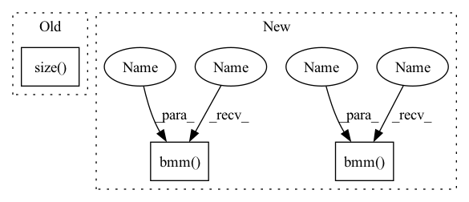

Pattern ID :1975

Before Change
self.other = nn.Parameter(torch.FloatTensor(self.hidden_size))
def forward(self, out_state, history):
seq_len = history.size()[1]
state_len = out_state.size()[1]
batch_size = history.size()[0]
attn_energies = torch.zeros(
After Change
if self.method == "dot":
history = history.permute(0, 2, 1) // batch_size * hidden_size * history_len
attn_energies = torch.bmm(out_state, history)
elif self.method == "general":
history = self.attn(history)
history = history.permute(0, 2, 1)
attn_energies = torch.bmm(out_state, history)
return F.softmax(attn_energies, dim=2)
class DeepMove(AbstractModel):
In pattern: SUPERPATTERN
Frequency: 3
Non-data size: 3
Instances
Fragment ID: 7333898
Project Name: libcity/bigscity-libcity
Commit Name: ec61c9cd984d1c86ee715380ed3b65b4222c8d1f
Time: 2021-05-06
Author: 33283819+WenMellors@users.noreply.github.com
File Name: trafficdl/model/trajectory_loc_prediction/DeepMove.py
M Class Name: Attn
N Class Name: Attn
M Method Name: forward(3)
N Method Name: forward(3)
M Parent Class: nn.Module
N Parent Class: nn.Module
M File Name: trafficdl/model/trajectory_loc_prediction/DeepMove.py
N File Name: trafficdl/model/trajectory_loc_prediction/DeepMove.py
M Start Line: 33
M End Line: 43
N Start Line: 38
N End Line: 45
'>
Before Change
loss () or (batch_size,)
batch_size, embedded_dims, n_bins, n_frames = input.size()
batch_size, n_sources, n_bins, n_frames = target.size()
input = input.view(batch_size, embedded_dims, n_bins * n_frames)
target = target.view(batch_size, n_sources, n_bins * n_frames)
input_transposed = input.permute(0, 2, 1).contiguous() // (batch_size, n_bins * n_frames, embedded_dims)
After Change
YY1 = YY.sum(dim=-1) // (batch_size, n_samples)
D = torch.diag_embed(1 / torch.sqrt(YY1 + eps)) // (batch_size, n_samples, n_samples)
VD, YD = torch.bmm(trans_V, D), torch.bmm(trans_Y, D) // (batch_size, embed_dim1, n_samples), (batch_size, embed_dim2, n_samples)
VDV, YDY = torch.bmm(VD, V), torch.bmm(YD, Y) // (batch_size, embed_dim1, embed_dim1), (batch_size, embed_dim2, embed_dim2)
VDY = torch.bmm(VD, Y) // (batch_size, embed_dim, embed_dim2)
loss = torch.sum(VDV**2, dim=(1, 2)) + torch.sum(YDY**2, dim=(1, 2)) - 2 * torch.sum(VDY**2, dim=(1, 2)) // (batch_size,)
'>
Fragment ID: 7333897
Project Name: tky823/dnn-based_source_separation
Commit Name: 8860d8d92de4ba4390fa89247619810b0c821fe6
Time: 2021-11-22
Author: delta9guitar97@gmail.com
File Name: src/criterion/deep_clustering.py
M Class Name: AffinityLoss
N Class Name: AffinityLoss
M Method Name: forward(4)
N Method Name: forward(4)
M Parent Class: nn.Module
N Parent Class: nn.Module
M File Name: src/criterion/deep_clustering.py
N File Name: src/criterion/deep_clustering.py
M Start Line: 19
M End Line: 34
N Start Line: 26
N End Line: 37
'>
Before Change
self.other = nn.Parameter(torch.FloatTensor(self.hidden_size))
def forward(self, out_state, history):
seq_len = history.size()[1]
state_len = out_state.size()[1]
batch_size = history.size()[0]
attn_energies = torch.zeros(
After Change
if self.method == "dot":
history = history.permute(0, 2, 1) // batch_size * hidden_size * history_len
attn_energies = torch.bmm(out_state, history)
elif self.method == "general":
history = self.attn(history)
history = history.permute(0, 2, 1)
attn_energies = torch.bmm(out_state, history)
return F.softmax(attn_energies, dim=2)
class DeepMove(AbstractModel):
'>
Fragment ID: 7333893
Project Name: libtraffic/bigscity-libtraffic
Commit Name: ec61c9cd984d1c86ee715380ed3b65b4222c8d1f
Time: 2021-05-06
Author: 33283819+WenMellors@users.noreply.github.com
File Name: trafficdl/model/trajectory_loc_prediction/DeepMove.py
M Class Name: Attn
N Class Name: Attn
M Method Name: forward(3)
N Method Name: forward(3)
M Parent Class: nn.Module
N Parent Class: nn.Module
M File Name: trafficdl/model/trajectory_loc_prediction/DeepMove.py
N File Name: trafficdl/model/trajectory_loc_prediction/DeepMove.py
M Start Line: 33
M End Line: 43
N Start Line: 38
N End Line: 45